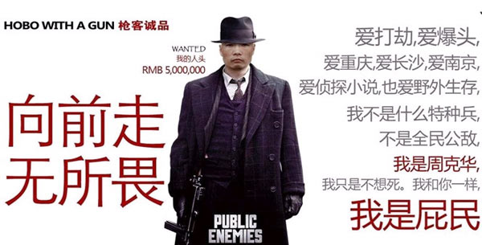
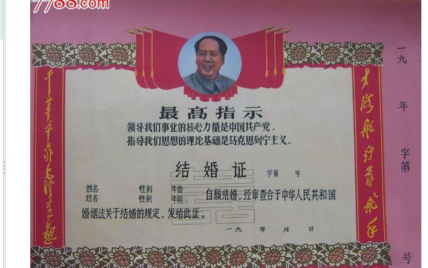
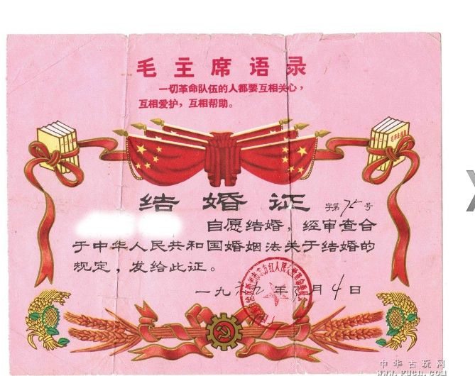
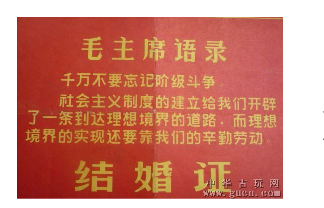
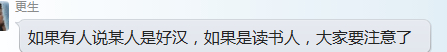

Conversation with 81184027 at Sun 06 Apr 2014 09:58:16 AM CST on 154115835 (webqq)
(10:24:11 AM) 这一季的花开过后: 一念悠悠几多愁，再叹青丝已白头。从来人生都如梦，可怜圣人几回首。
(11:09:06 AM) 光: 【评论】罗志田：校园与社会有点距离更好 2014-04-03 14:26:12 ▲ 如果校园不能相对独立于社会，失了远虑，必生近忧，恐怕也就难以培养具有“恒心”的超越性人才了。
▲ 读书可以改变人，读书本身也以人的改变为目标。用过去的通俗说法，读书的目的就是教人怎样“做人”。因此，读书不仅是一种直观的行为，即阅读书籍或技术、 技能性的学习，它更是一种具有特定涵义的行为方式，强调一种不那么功利、目的不那么具体的超技能持续学习，体现出一种探寻无用之用的长远追求。
罗志田：《经典淡出之后》，三联书店，2013年11月罗志田：《经典淡出之后》，三联书店，2013年11月
我们近年时兴破除各种边界，学术与社会的互动较前密切。一方面，分工和边界意识的突破，使媒体以及网民对学界的兴趣增加；另一方面，某些学术体制和校园规则，实际造成或推动了学术与非学术区分的模糊，恐怕也是众多与学术相关的话题引起广泛社会关注的隐因。
子 贡曾说：“君子之过也，如日月之食焉：过也，人皆见之；更也，人皆仰之。”在某种程度上言，大学校园中那些不如意的现象能引起较广泛的关注，提示着“社 会”对大学的预设仍相对高雅。在很多人的认知中，大学还是一个培养君子的地方。因此，当这里也出现与社会其他地方相类似的问题时，“社会”就显得不那么能 够容忍。
社会对校园前所未有的关怀，使我们校园中人既非常感动，也更感觉到责任的存在。外间有些批评，或带有不少想象意味，也不排除有人 故意要把大学“讲坏”（取朱子说屈原被后人“讲坏”意）。这个时候，校园中人或当多进行“自我批评”。我自己最近稍多议及校园现象，且偏向于指出问题，就 更多属于自责的范围；所谓“自我批评”者，即被批评的通常也包括批评者自己。
今日大学校园的确呈现出多歧的面貌：一些朋友还在憧憬着教授 治校，另外也有人担心着学术的混乱。坦白说，我对目前的教授没那么乐观，对今日的学术也没那么悲观。我想重申自己说过的话：校园里确实出现了一些不很佳妙 的现象，纵向比起来或已前所未有，若横向与外面的情形相比，仍是一片相对清纯的净土。校园里乡愿风气的确较为流行，却也不是没有愿意承担责任的老师和学 生；多数师生的确比以前更世故圆熟了，但理想和理想主义在这里还是比其他地方更多一些。
传统中国社会曾给读书人以不少特殊的待遇（精神为 主，物质为辅），同时也给读书的场所（如学塾和书院）以相对独立和疏离于“社会”的地位。严格说，不论从物质的还是心理的“空间”看，读书之地原本都是 “社会”的一部分，谈不上多少独立和疏离。但迄今为止，在多数人心目中，学校还是一个与“社会”有所区隔的所在。如今一般人口中仍把从学校毕业称为“进入 社会”，最能体现两者间似有着某种距离，或至少有某种距离感。
明明就在社会之中，却可以被看作不在其中，这与中国传统中“读书”的特定涵 义相关。孟子曾说：一般人是无恒产即无恒心，只有士人才可以“无恒产而有恒心”。早年的“士”可能与打仗有关，到孟子的时代，士已基本就是读书人。孟子显 然注意到经济对人的支配性影响，但指出了“读书”这一方式可能提高人的自主能力，至少可以改变人对经济的依赖性。这样，管子所说的衣食足而知荣辱，只是一 般层次的现象；经过“读书”的升华，人就可以超越这一层次，达到更高的境界。
简言之，“读书”可以改变人，它本身也以人的改变为目标。用 过去的通俗说法，读书的目的就是教人怎样“做人”。因此，“读书”不仅是一种直观的行为，即阅读书籍或技术、技能性的学习；它更是一种具有特定涵义的行为 方式，强调一种不那么功利、目的不那么具体的超技能持续学习，体现出一种探寻无用之用的长远追求。
也因此，大学能帮助学生就业当然最好， 但就业显然不是高等教育的主要目标。张之洞设计的清末学制，远比以前更侧重应用，却仍强调学堂主要为国家培养“人才”，其所学多与“做人”相关。仅对那些 “资敏家寒”而“急于谋生”的学生网开一面，准其兼习洋文等与谋生关联密切的技能。
既然学习的目标就是追求无用之用，学习的处所当然应与“社会”有所疏离。如果校园不能相对独立于社会，失了远虑，必生近忧，恐怕也就难以培养具有“恒心”的超越性人才了。
把 大学设想为独立于社会的象牙塔，已是一种不可能的迷思（myth）。学术既然可以影响社会，就不能拒绝社会的关注，有时还需要社会的关注。学术传承靠教 育，教育则不仅培训学术人才，实更宽广。目前更需要社会多关注的，恐怕是培养少年的中小学教育。尤其是从中央到地方都一直在强调而始终无效的学生“减 负”，确实需要“社会”集思广益，提供解决的方案。至于大学校园及其所代表的“学术”，最好还是与“社会”有所区隔。
在以悠久著称的中国文化里，仅仅百年的现代大学可以说是名副其实的幼童，可能还真需要外在“社会”的呵护。同时也不妨对其有所信任，让校园里的师生通过自我批评来自我提高。很多时候，距离不一定意味着疏远，能维持一定的距离感，或更能相互影响，似对彼此都更好。
来源 http://www.infzm.com/content/27997
(11:49:28 AM) 光: 心理咨询在当前社会中的地位？我认为，心理咨询未来必然会朝着发达的国家模式前进，也就是说，必然会专业化和职业化。---------------------------------------------------------------------------------------------------------------------------------------------------------------------备注：心理咨询的模式是咨询师价值观的产物，在咨询师和来访者之间，关系是否对等？我想这种对等的关系是相对的。是人性的对等。 所有的心理咨询理论所体现的都是中产阶级、白人、犹太--基督教文化传统对生活的看法。但是我们并不是生活在一元的世界中，我们的价值观不可能一致。那么，问题在于，作为咨询师，你该怎样对待那些在价值观上与你违背的来访者？是同化？还是顺应？我想，如果同化来访者，很有可能会让来访者进入到另外一种痛苦之中，在来访者本来的痛苦没有得到解决的情况下，产生了新的痛苦，是否是咨询师应该做的？咨询师应该怎么办？我现在的理解是，咨询师，应当不强求。比如，来访者的悲观会让自己更能满足，那么咨询师应该去告诉他，你的悲观是不对的，你应该乐观？我想，没有必要这样。在具体的环境中，应该对具体的问题用相应的方法来解决，但是，核心是，不强求。 《建构自我，建构美国：心理疗法的文化史》（菲利普。库什曼） ----（constructing the self, constructing America: A Cultural History of Psychotherapy)
(12:29:09 PM) 光: 仁心仁术，又怎样呢？
一口气读完了《心术》。
做护士久了，就是会有些职业病。比如看着别人手时会评估别人的静脉，吃东西前会“三
查七对”看看是否在有效期内，还有，会去看心术。
记得那天我的外语老师问我是否喜欢这个职业，我没有像过去那么嫌恶地说不，而是想到
了失望这个词。说真的，我不否认这个职业的神圣性，不管外面人怎么评价，我始终觉得她
就是一个很光辉的形象。我想在我上班做出的每一点努力，都对患者的康复起到不小的作
用。
只是，在中国，她是廉价的。
所有的医院，重视的都是医疗，护理只是一个附属品。连我的学校不也是医学院附属的
吗？呵呵，说来有意思，有一次我做出院结帐，该病人一级护理两天，收费26元。我被雷到
了，就是说一级护理每天只有13块钱？我打一个安全型留置针就要25块，原来护士的劳动力
已到了这么廉价了？？无奈地笑笑。
《心术》中大多都是描写医生的，只有很少写到护士。但有一段看了确实很心酸。护士小
蕾被无理病人殴打导致眼角缝了三针，这已属于恶意伤人案，完全可以上告的。但是医院为
了名声，还是要她息事宁人，为了医院大局着想。于是这事就不了了之了。这位护士最后辞
职了，这是意料中的结局。
这让我想起我们医院陪训的那次，说到一个“委屈奖”，凡是为了医院利益受病人辱骂
及殴打不还手还口的，视情节轻重给予50-200奖励。大会上一片嘘声。我们医院虽然狗腿子
多，但热血医生护士还是不少的，有个还开玩笑说，领导，至少500-2000吧，不然医药费
都不够啊。
是啊，要是我，我不会要这个钱的。他要敢打我，我直接脱了白大褂跟你干上了，我是认
真的，我管你医院名声不名声，人若犯我，我必还击。
《心术》，取仁心仁术之意。事实上真的仁心仁术又怎样呢？或许做为一个医生或是护
士，奉献是必然的。可是奉献了又如何？一文不值不说，还要接受四面八方的恶语相向。试
问？谁还敢真心真意？仁心仁术？
有时候我极端憎恨这个职业的原因是它让我变的越来越冷血。我会害怕变成这样的自
己。我从来都不是，看见别人有困难可以独善其身的人。可是，在医院，我必须这么做，是
为了保全自己，只是为了保全自己而已。
(12:29:23 PM) 光: http://book.douban.com/review/3593171/
(12:31:13 PM) 逝去的童年: 黑白照片不都是死人么
(12:31:16 PM) 逝去的童年: 难道不是么？
(12:34:25 PM) 福建-福州&水浒: 现代人向来是顺从，不是反抗
(12:35:36 PM) 福建-福州&水浒: 这打人事件值得深思，假如那个病人去另外一个医院也如此放肆，，，，
(12:35:52 PM) 光: en
(12:35:55 PM) 光: 嗯
(12:36:44 PM) 福建-福州&水浒: 假如护士常常遇到不是拿起法律的武器，那法制就是一张纸
(12:38:26 PM) 福建-福州&水浒: 为大家舍小家，看似很伟大，不如说很可怜
(12:38:42 PM) 光: 我怀疑，在中国，这样一个流行潜规则的国度，作为显规则的法律是否真的有用
(12:39:13 PM) 光: 如果有用，为什么社会还有这么多抱怨的声音
(12:39:35 PM) 福建-福州&水浒: 你看西游记？
(12:39:38 PM) 福建-福州&水浒: 光
(12:39:43 PM) 光: 嗯
(12:39:57 PM) 福建-福州&水浒: 从有后台的妖怪都上天了
(12:40:11 PM) 福建-福州&水浒: 没有后台的妖怪都打死了
(12:40:20 PM) 光: 嗯
(12:40:24 PM) 福建-福州&水浒: 就能悟出一个道理了
(12:40:29 PM) 福建-福州&水浒: 潜规则
(12:40:50 PM) 光: 吴承恩挺会写的
(12:41:09 PM) 光: 可以看看吴闲云的解读
(12:41:07 PM) 福建-福州&水浒: 还真是四大名著
(12:41:32 PM) 光: 明朝的四大名著里面没有红楼梦
(12:41:35 PM) 光: 而是金瓶梅
(12:41:40 PM) 福建-福州&水浒: :L
(12:42:01 PM) 光: 清朝把金瓶梅换为了红楼梦
(12:42:22 PM) 光: 这些小说其实都是讽刺性小说
(12:42:40 PM) 光: 读书人最爱干的事情
(12:42:49 PM) 福建-福州&水浒: 就说三国吧，水浒传吧
(12:43:06 PM) 光: http://book.douban.com/subject_search?search_text=%E5%90%B4%E9%97%B2%E4%BA%91&cat=1001
(12:43:12 PM) 光: 这几本都可以看看
(12:43:17 PM) 福建-福州&水浒: 恩
(12:43:23 PM) 光: 嗯
(12:43:48 PM) 逝去的童年: 额
(12:43:51 PM) 逝去的童年: 我说一下
(12:44:03 PM) 逝去的童年: 心术是一个电视剧好不好
(12:44:18 PM) 光: 哦
(12:44:23 PM) 光: 我不看电视的
(12:44:50 PM) 福建-福州&水浒: 这几本书都挺有意思的
(12:44:53 PM) 福建-福州&水浒: :D
(12:45:13 PM) 光: 嗯
(12:45:16 PM) 福建-福州&水浒: 先买本煮酒探西游看看
(12:45:24 PM) 光: 嗯
(12:45:26 PM) 福建-福州&水浒: 淘宝有卖吧
(12:45:35 PM) 光: 应该有
(12:47:09 PM) 逝去的童年: ....
(12:47:49 PM) 逝去的童年: 唉
(12:47:57 PM) 逝去的童年: 深不可测
(12:47:54 PM) 逝去的童年: 贤菲恋
(12:47:50 PM) 逝去的童年:
(12:48:41 PM) 光: :face14:
(12:48:54 PM) 逝去的童年: 看单身公寓去
(12:49:03 PM) 光: 好
(12:49:58 PM) 福建-福州&水浒: 说说水浒传吧
(12:50:00 PM) 福建-福州&水浒: :smile:
(12:50:20 PM) 光: 水浒传也是高级黑
(12:50:20 PM) 福建-福州&水浒: 假如宋江不受招安
(12:50:32 PM) 福建-福州&水浒: :D
(12:51:36 PM) 光: 揭秘水浒：晁盖离奇死亡之谜“休分功劳高下，待日后出力多寡，那时另行定夺。”这是宋江说的话。兄弟们的排名，要看日后的出力状况而定。谁的功劳大，谁当然就可以排名居前。到了要立功的时候：晁盖欲打祝家庄，则宋江劝：哥哥山寨之主，不可轻动也。晁盖欲打高唐州，则宋江又劝：哥哥山寨之主，不可轻动也。晁盖欲打青州，则宋江又劝：哥哥山寨之主，不可轻动。晁盖欲打华州，则宋江又劝：哥哥山寨之主，不可轻动也。晁盖欲打曾头市，则宋江又劝：哥哥是山寨之主，不可轻动。如此一来，只要是有立功的机会，就老是宋江带着他的兄弟们在立功，并且又收编许多新的小弟，而晁盖和他的兄弟们就永远也没有立功的机会了。宋江壮大越来越牛，晁盖不能坐以待毙！晁盖要反击了，看了宋江就烦，所以他格外强调了这么一句话：“不是我要夺你的功劳！……”又听到宋江劝他。“晁盖忿怒，便点起五千人马，请启二十个头领相助下山。”“忿怒”。晁盖忿怒了。多么准确的词汇。“请启二十个头领相助”。晁盖已经成了花瓶摆设，威望全无，下山还要请人。哪像宋江，一提到下山，众兄弟们齐声吆喝：“愿随哥哥前往！”所以，晁盖忿怒了，晁盖要反击了。这次我一定要去，兄弟，不是我要夺你的功劳。就是这一次，也就只这一次，晁盖一下山就把命丢了，死了。你说巧不巧？
(12:51:39 PM) 逝去的童年: 这世界上没有加入
(12:51:53 PM) 逝去的童年: 假如
(12:51:59 PM) 光: 晁盖每一次要求下山，都没让他去，偏偏这次一下山就死了。这也太蹊跷了吧。这究竟是个意外呢？还是必然呢？今天，我们就来探讨这个问题。一、起因之谜：梁山与曾头市本无冲突，起因只为一匹马。有个叫“金毛犬”段景住的人，只闻得宋江大名，要宋江收他做个小弟。他偷了一匹好马，特来献给宋江，作为进身之礼。在半路上，马被曾头市的史文恭夺去了。宋江见了这段景住，顿时“心中暗喜”。他在喜什么呢？接着，宋江叫戴宗去曾头市看马。戴宗一回来，事态就变地格外严重了。戴宗说：“他与我们势不两立，定要捉尽俺山寨中头领，做个对头。…更有几句言语唱道：‘扫荡梁山清水泊，剿除晁盖上东京。生擒及时雨，活捉智多星。曾家生五虎，天下尽闻名’。”江湖上只闻宋江大名，晁盖其实无名。再者，段景住对史文恭说过，马是给宋江的（并非给晁盖）。而曾头市却偏偏只要“剿除”晁盖一个人！这一切都是出自宋江的心腹戴宗之口。他回来后就是这样说的。那么，戴宗是不是故意夸大其词，激怒晁盖呢？有这种可能。因为曾头市并不知有晁盖，也没人认识晁盖。总之，晁盖就是在听了戴宗的这几句话后，才大怒道：“这畜生怎敢如此无礼！”执意要下山。二、征兆之谜：晁盖下山，宋江相送。“饮酒之间，忽起一阵狂风，正把晁盖新制的认军旗，半腰吹折。众人见了，尽皆失色。”在许多古代小说中，都把出征前折了军旗视为“凶兆”！旗杆子竖那里，一阵风突然吹来，把旗杆吹倒、把旗帜吹掉，这些都是有可能的。但是，如果说一阵风刮来，就把一根旗杆子从半中腰里刮断了，有这种可能吗？偏偏，这种不符合物理学逻辑的怪事就发生了。一阵风吹来时，就硬是把一根直挺挺的旗杆子从半腰里吹断
(12:52:09 PM) 光: 了。为什么会有这样奇怪的事发生呢？与晁盖之死真的有必然联系么？三、中箭之谜：晁盖带着人马与曾头市交锋后，曾家一连三日闭门不战。到第四日，忽有两个和尚，到晁盖寨里来投拜，带晁盖晚上去劫寨。晁盖将人马分一半，点了十个头领同去，分别是：刘唐、阮小二、呼延灼、阮小五、欧鹏、阮小七、燕顺、杜迁、宋万、白胜。加上晁盖本人，共计十一名头领。大家都跟着两个和尚前进，黑夜疾走，行不到五里多路，黑影处不见了两个僧人。军士慌起来，大家便又急回旧路走。不到百十步，只见四下里金鼓齐鸣，喊声振地，一望都是火把。晁盖众将引军夺路而走。才转得两个湾，撞出一彪军马，当头乱箭射将来。不期一箭，正中晁盖脸上，倒撞下马来。急拔得箭出，看那箭时，上有“史文恭”字。中了埋伏不奇怪。但奇怪的是，史文恭既然想要偷袭晁盖，又何必要在箭上刻“史文恭”的名字？既然是用“乱箭”射，又何必要在箭上涂毒呢？并且，在场的一共是十一名头领，乱箭齐发射过来时，其他的十个人都屁事没有，恰恰就只一箭射中了晁盖一个人！你说巧不巧？晁盖究竟是中了敌人的埋伏，还是被自己人暗算了呢？欲知后事如何，且听下回分解。
(12:52:10 PM) 逝去的童年: 如果鲁智深不去招惹别人
(12:52:14 PM) 逝去的童年: 也就不会死了
(12:52:35 PM) 福建-福州&水浒: :)
(12:52:53 PM) 光: 吴闲云推出杀死晁盖的直接杀手是林冲
(12:53:04 PM) 光: 间接杀手是宋江和吴用
(12:53:43 PM) 光: 59、 解密水浒：晁盖遗嘱之谜晁盖在攻打曾头市的时候，不期中了一支毒箭，拔出来看那箭时，上有“史文恭”字。当日众头领闷闷不已，也无恋战之心，人人都有还山之意。就把晁盖抬回了梁山。虽然射中晁盖的箭上，刻有“史文恭”的名字，但却未必就是史文恭放的箭。原因有三：1.晁盖偷袭的是北寨，北寨是由曾涂与副教师苏定把守的。而史文恭把守的是总寨。按说史文恭此时不应该出现在北寨。2.“急回旧路走，不到百十步，只见四下里金鼓齐鸣。”晁盖并未到达目的地，是在回去的路上中的埋伏。史文恭作为统帅，更没理由在敌后冒险当射手。况书中从未提到过史文恭善于射箭的描述。3.交战之初，曾家说道：“我曾家府里，杀你死的不算好汉。我一个个直要捉你活的，载装陷车里，解上东京。”声称是要捉活的。晁盖中毒后，已经不能说话了，但到最后，还是挣扎着说了这样一句话：“贤弟保重。若哪个捉得射死我的，便叫他做梁山泊主。”这是晁盖最后的遗嘱，颇令人深思。老大死了，老二接班，本来就是天经地义的事。但晁盖偏偏要说“哪个捉得射死我的，便叫他做梁山泊主。”什么意思呢？因为山寨中能捉住史文恭的人不少，偏偏只有宋江的功夫最差，力气只娘们大小，所以最没有可能捉住史文恭的人，就是宋江。这就等于直接否定了让宋江接班继任，一下子推翻了晁盖以前所有的推让之举。究竟是什么让晁盖做出了这么大的转变呢？晁盖是不是在临死之前发现了什么呢？下面，我们再来看看宋江的表现：宋江见晁盖死了，哭得发昏。众头领都请宋江为山寨之主。
(12:54:05 PM) 光: 宋江道：“却乃不可忘了晁天王遗言。临死时嘱道：‘如有人捉得史文恭者，便立为梁山泊主。’此话众头领皆知，亦不可忘了。又不曾报得仇，雪得恨，如何便居得此位？”这一番话，表面上看起来，是宋江在假意推辞，不肯当山寨之主。而实际上，宋江是在有意偷换概念，故意混淆兄弟们的视听。宋江说，晁天王死的时候交代了：如有人捉得“史文恭”者，便立为梁山泊主。此话众头领皆知，亦不可忘了。尤其强调：众头领皆知，亦不可忘了。要求大家牢牢记住。你看，晁盖是这样说的吗？晁盖说的是“射死我的”，他有说是史文恭射的他吗？根本就没有！但宋江不止一遍的向众兄弟门反复灌输强调这一概念，有意给大家造成了这样一种错觉：是史文恭射死了晁盖。宋江聚众商议，要与晁盖报仇。军师吴用谏道：“哥哥，庶民居丧，尚且不可轻动。哥哥与师，且待百日之后，方可举兵，未为迟矣。”不与晁盖报仇的原因是“居丧”期间，不可用兵。这完全是屁话，因为他们照样还是在用兵打北京城、打大名府，打了好几仗，就是不打曾头市报仇。为什么？因为没仇。后来，一直到了第二年的春天，宋江才兴兵去打曾头市。为什么打曾头市呢？是为晁盖报仇吗？并不是。是因为段景住又买了二百余匹好马，被郁保四劫夺，又解送曾头市去了。宋江听了，大怒道：“前者夺我马匹，今又如此无礼！晁天王的冤仇，未曾报得，旦夕不乐。若不去报此仇，惹人耻笑。”先抢我的马，今又抢我的马（属大额资产），这是主因。而晁盖的仇，只是勉强排在最后的次因（借口）而已。所以，宋江要打曾头市，其目的是要“夺马”。大家在看《水浒》的时候，总会一相情愿的想象：梁山二打曾头市，是去为晁盖报仇。
(12:54:22 PM) 光: 可是，当双方交战的时候，曾家从未宣传过前次击毙敌方首领的辉煌战绩；而梁山方面，宋江也从未公开提出过曾家有杀晁盖之仇。宋江只说要马，不说有仇，这难道不是很奇怪吗？交战之后，曾家不愿再打了。曾长官写信过来讲和：“曾头市主曾弄，顿首再拜宋公明统军头领麾下：日昨小男倚仗一时之勇，误有冒犯虎威。向日天王率众到来，理合就当归附。奈何无端部卒，施放冷箭。更兼夺马之罪，虽百口何辞。原之实非本意。今顽犬已亡，遣使讲和。如蒙罢战休兵，将原夺马匹尽数纳还，更赍金帛犒劳三军。此非虚情，免致两伤。谨此奉书，伏乞照察。”宋江看了，回信写道：“梁山泊主将宋江，手书回覆曾头市主曾弄帐前：国以信而治天下，将以勇而镇外邦。人无礼而何为？财非义而不取。梁山泊与曾头市，自来无仇，各守边界。奈缘尔将行一时之恶，惹数载之冤。若要讲和，便须发还二次原夺马疋，并要夺马凶徒郁保四，犒劳军士金帛。忠诚既笃，礼数休轻。如或更变，别有定夺。草草具陈，情照不宣。”曾家似乎并不知道晁盖死了。提出讲和的条件只是：归还马匹；犒劳三军。而宋江也承认说，“梁山泊与曾头市，自来无仇。”似乎晁盖死了，和他们根本就没什么关系。答应讲和的条件是：归还马匹；交出夺马的郁保四；犒劳军士。比曾家提出的条件，只增加了一条，交出夺马贼郁保四。偏偏没有要求交出射死晁盖的凶手史文恭！你说离谱不离谱？！这就怪了，曾头市没认为晁盖是他们杀的，宋江也认为晁盖不是他们杀的，与曾头市，自来无仇。那么，晁盖究竟死于谁手？
(12:55:46 PM) 光: 60、 解密水浒：晁盖究竟死于谁人之手？晁盖出征的时候，一阵风吹过，就把旗杆子从半中腰吹断了，真不可思议！接着就是，“众人见了，尽皆失色。——此乃不祥之兆。”晁盖中了箭后，大家又七嘴八舌的都说：“今番晁天王哥哥下山来，不想遭这一场，正应了风折认旗之兆。”这就是要叫大家都相信：晁盖的死，乃是天意。偏偏金圣叹不相信。金圣叹说，通篇都是用的深文曲笔，以深明宋江弑杀了晁盖。理由是什么呢？金老先生解释道：今我不能知其事之如何，然而“观其书法，推其情状”，便可以知道是宋江弑晁盖。也就是说，他是根据作者的写法，推理出来的。他从十个方面进行了逻辑推理，基本上还是比较合其情状的，这里我就不再一一复述了。宋江弑晁盖，说得通。用最客观、最准确的说法就是“晁盖死于权利路线之争。”晁盖路线与宋江路线相悖，于梁山无所发展，于兄弟们无所利润。所以晁盖的失败，是注定的事，是迟早的事。这个结论，相信多数人能够接受，应该争议不大。但有一点，如果真是宋江弑晁盖，那么由谁去执行的这个绝密计划呢？所以，又有许多人接着金老先生的推理，继续往下推理——是宋江的心腹花荣射死了晁盖！帮宋江哥哥清除绊脚石。可是，并不能因为花荣的箭术高超，就可以认定是他干的。因为你从书中绝对找不到半点花荣在场的证据，哪怕是勉强找一个捕风捉影、牵强附会的证据出来也好，找得到吗？根本就没有！再说，以花荣的神射，用得着下毒吗？这么说来，梁山方面的花荣，和曾头市的史文恭，其实都是应该排除的对象。那么，凶手究竟是谁呢？下面，我们不妨也来个“观其书法，推其情状”，结合
(12:56:17 PM) 光: 上下文的意思来推理推理。（不好意思，我又要以小人之心度君子之腹了。）曾头市方面的信件中承认“奈何无端部卒，施放冷箭。”说明与晁盖中箭还是有关系的。史文恭是统帅，也不在场，放箭的是一些“无端部卒”。在战场上放乱箭是一件很正常的事，并不是专门只针对某一个人的，晁盖带着队伍，走在前面，不期中了一箭，也很正常。“都回到帐中。众头领且来看晁盖时，那枝箭正射在面颊上。急拔得箭，出血晕倒了。”这段描述，箭是射在脸上，应该不是致命部位。晁盖先还是清醒的，拔箭出血后才晕倒的。紧接着：“林冲叫取金枪药敷贴上。原来却是一枝药箭。晁盖中了箭毒，已自言语不得。”注意看，是在林冲敷了药以后，才发现晁盖中了毒的。那么，试问林冲怎么就知道他中了毒呢？从夜里中箭，到天明回寨，没发现他中毒；从回寨后到拔箭时，没发现他中毒；从拔箭后晕倒了，没发现他中毒。偏偏一敷药，就发现中毒了。这还不可疑吗？因此，在下斗胆推测：是林冲就此敷药机会，毒杀了晁盖！看官先莫要惊讶。推测林冲，总要比推测花荣恰当的多。因为只有林冲弑晁盖，才可以在水浒故事中起到“承上启下”的作用。先说“承上”。梁山好汉中，也只有林冲有敢杀老大的冲动！“这梁山泊便是你的？不杀了，要你何用？你也无大量之才，也做不得山寨之主！”这是林冲的经典语录。用在第一代领导人王伦身上恰当，用在第二代领导人晁盖身上同样也恰当！晁盖推辞时，林冲把晁盖推在交椅上，叫道：“请勿推却，若有不从者，将以王伦为例！”你看，作者早在晁盖登基之时就埋下了伏笔：林冲居然说过要把晁盖以王伦为例的话！林冲杀老大，为梁山前途考虑。因为王伦与晁盖比，无大量之才，做不得山寨之主；而晁盖与宋江比，同样也是无大量之才，做不得山寨之主！
(12:56:32 PM) 光: 宋江路线要明显优于晁盖路线。不需要吴用一个眼色，他也会自愿去干。把不成器的老大做掉，推有实力的人当老大，这才符合林冲。你看，晁盖一死，“林冲与公孙胜、吴用并众头领，商议立宋公明为梁山泊主。”是林冲带头。“次日清晨，林冲为首，与众等请出宋公明在聚义厅上坐定。”还是林冲带头。林冲一惯不出头，恰恰每逢换届时，出头最积极。再说“启下”。晁盖死后，宋江为什么要把卢俊义赚上山？还要让卢俊义当老大（老二）呢？以卢俊义的名望，根本就不能顺利实现招安；以卢俊义的领导才能，完全不是那么回事；以卢俊义的智商，人家害他他还感恩。究竟凭什么要赚他来当头领？缺了他，宋江还不是一样能领导梁山。所以，绝大多数读者都会纳闷，为什么要选择卢俊义？个人见解是：用他来遏制林冲。（宋江直系中没有强于林冲的人），按书中描述，卢俊义的武艺，在林冲之上。卢俊义头脑简单，容易控制，武艺超群，与林冲同为周侗弟子，用他来对付这个喜欢杀老大的林冲最合适。这也就是为什么晁盖一死，宋江就急急要把卢俊义弄上山的原因了。
(12:57:50 PM) 光: 如果仅仅是讲故事，大家太小看作者了
(01:01:01 PM) 福建-福州&水浒: :D
(01:01:11 PM) 光: :face14:
(01:02:27 PM) 福建-福州&水浒: 名著还是“名著”
(01:02:37 PM) 光: 嗯
(01:02:46 PM) 光: 通俗是流传的广
(01:02:59 PM) 光: 作者不俗
(01:03:24 PM) 福建-福州&水浒: 把勾心斗角当名著，后人真有想法
(01:03:51 PM) 光: 嗯
(01:04:09 PM) 光: 从表面看是看不出来的
(01:04:05 PM) 福建-福州&水浒: 中国人民太聪明了
(01:04:27 PM) 光: 所以清朝第一件事情就是文字狱
(01:04:32 PM) 光: 就是怕了这些读书人
(01:05:44 PM) 福建-福州&水浒: 毛无法控制文革后，说了一句话，看来大学还是要办的
(01:06:00 PM) 福建-福州&水浒: 有点接近
(01:06:04 PM) 光: 专制皇帝都是很怕读书人的
(01:06:17 PM) 光: 笔杆子厉害
(01:07:26 PM) 福建-福州&水浒: 清华大学第一任校长是个讲真话的人，其实胡适的批判文章许多，但是就是发表不出来
(01:07:48 PM) 光: 嗯
(01:08:12 PM) 光: 做学问就是要有直心（不伪）的心
(01:08:10 PM) 福建-福州&水浒: 专政是这样的
(01:08:16 PM) 福建-福州&水浒: 不这样也容易乱啊，
(01:08:21 PM) 光: 不然做什么学问
(01:08:36 PM) 光: 如果是弄虚作假，世上已经很多了
(01:08:43 PM) 福建-福州&水浒: 读书人一乱，谣言相传，民也乱
(01:08:57 PM) 光: 嗯
(01:09:05 PM) 福建-福州&水浒: 理解理解
(01:09:28 PM) 光: 小知识分子不管他们
(01:09:49 PM) 光: 大知识分子，如果没有不伪的心，是做不出真正的大学问的
(01:10:05 PM) 福建-福州&水浒: 就说宋江也是文官吧，不是被女人祸害她本不想上梁山
(01:10:14 PM) 光: 知识的门又怎么会随便开启
(01:10:28 PM) 福建-福州&水浒: 看看他上山时那个纠结的样就知道了
(01:10:35 PM) 光: 宋江高级黑
(01:11:07 PM) 光: 宋江为何要私放晁天王？ “生辰纲”被劫之后，上级官府差人去济州下公文，限期济州市长十天之内破案，若十天之内破不了案，就要“请”他到沙门岛走一遭。（流放）府尹大惊，马上把公安局长何涛叫来，大骂一顿，说他不用心缉捕，恐吓道：“先把你这厮迭配远恶军州，雁飞不到去处。”便唤过文笔匠来，去何涛脸上刺下“迭配...州”字样，空着发配州名。喝道：“何涛，你若获不得贼人，重罪决不饶恕。”何涛四处打探消息，终于捕获了白日鼠白胜。白胜交代了犯罪经过，把晁盖供出来了：“郓城县东溪村晁保正。”于是，何涛便去郓城县捉晁盖。这一次抓捕行动是非常秘密的。先是“三更”时分，抓住白胜，逼出口供，然后，“星夜”来到郓城县。按说，是不会走漏消息的。那何涛来到郓城县县衙门口。只见县里走出一个吏员来——这个人，便是宋江。这是宋江第一次出场，在小说的第十八回：那押司姓宋名江，表
(01:11:19 PM) 光: 字公明，排行第三，祖居郓城县宋家村人氏。为他面黑身矮，人都唤他做黑宋江。又且于家大孝，为人仗义疏财，人皆称他做孝义黑三郎。……平生只好结识江湖上好汉。当时，宋江见了何涛，问：上司到弊县来，不知有何公务？何涛就把来捉晁盖的事都说了。宋江听罢，吃了一惊，肚里寻思：“晁盖是我心腹弟兄。他如今犯了迷天之罪，我不救他时，捕获将去，性命便休了。”然后，畔住何涛喝茶，自己转身就去给晁盖报信，叫他快跑！那么，宋江为什么要私放晁盖呢？仅凭“心腹弟兄”是说不通的。虽然嘴上说的是“心腹弟兄”，但实际上，仅仅就只是“认得”而已。也谈不上有什么深厚交情。1.晁盖七人聚在一起密谋“生辰纲”时，从头到尾，压根就从来没提到过还有宋江这个心腹弟兄。2.晁盖天天和吴用聚在一起商量，这两个才是走的最近的人！关系不是一般的密切！3.吴用却问道：“正是谁人？”可见，天天和晁盖混在一起的吴用，居然不认识宋江！两人从来也没见过面！所以，说宋江和晁盖是心腹弟兄，就很令人怀疑。话再说回来，即使真的是心腹弟兄，在生死关头，也没几个人舍得抛弃自己的前途与性命去通知人
(01:11:19 PM) 福建-福州&水浒: 高级黑
(01:11:32 PM) 光: 家逃跑的。可见，里面还有文章。下面，是我的一己之见：（一）高收益无论宋江报不报信，晁盖逃走的可能性，都非常大！我们假如宋江不去通风报信，那么，接着，必然就是时文彬县令安排朱仝、雷横这两个刑侦队长去抓晁盖。而朱仝、雷横这两人，都是有心要故意放走晁盖的人。结果，还是捉不住晁盖！所以，宋江抢先去报信，其本质，只是一次“投机”行为！和义气的关系反倒不怎么大了。这样，宋江可以在江湖上轻易获得“讲义气”好名声的机会。并且，还有望因为“义气”而分到“生辰纲”赃物十分之一的巨款！（约人民币300万）（二）低风险宋江只是县里的一个小吏。何涛到县里来，是来找县令时文彬先生的，不是来找宋江的，他遇到宋江，纯粹是偶遇。因此，本县与该案有干系的人，是时文彬先生。无论晁盖是跑了，还是被捉住了，其实和宋江的关系都不大。（该案不归宋江负责）。而是和时文彬先生关系重大。所以，晁盖如果逃跑了，该时文彬先生负全责，根本就不会追究到宋江身上！宋江和这个案子是没有任何关系滴！宋江偷偷地跑去通风报信，叫
(01:11:40 PM) 光: 晁盖快跑，他是不用负法律责任的。根本就没他说的“冒死”那么严重。（三）除绊脚石宋江这个小吏，相当现在一个小科长，是个注定没有前途的行业。按当时的制度，他是没有机会做官的。但是他仗义疏财，挥金如土。这个小科长的收入就有些不明不白了。《水浒传》第十三回结尾写：且说山东济州郓城县新到任一个知县，姓时名文彬，当日升厅公座，但见：为官清正，作事廉明。每怀恻隐之心，常有仁慈之念。争田夺地，辩曲直而后施行；斗殴相争，分轻重方才决断。闲暇抚琴会客，也应分理民情。虽然县治宰臣官，果是一方民父母。可见，这时文彬县令是新调来的，时间不长，为官清正，作事廉明。这样一来，这个县令的清廉，或多或少都会影响到脚踏黑白两道的宋江的灰色收入。所以，宋江跑去通风报信，其实是一件低（无）风险、高收益的投机行为！同时，还可以坑害时文彬县令，一举多得。
(01:12:03 PM) 光: 23、 晁盖相信宋江吗？当时，宋江骑着快马赶来给晁盖通风报信。来到晁盖庄上，庄客进去通报。晁盖问道：“有多少人随从着？”庄客道：“只独自一个……”从这里我们可以看出：晁盖对宋江还是持有很强的戒备心理和警惕性的，先要问清楚他带了几个人来。并不是嘴上说的“心腹弟兄”那样放心。上回我们说了，晁盖和宋江之间，实际上，就只是“认得”而已，谈不上有什么深厚交情。因为天天和晁盖混在一起的吴用，居然不认识宋江！两人从来也没见过面！现在，宋江进来了，说道：“哥哥不知，兄弟是心腹弟兄，我舍着条性命来救你。如今黄泥冈事发了。白胜已自拿在济州大牢里了。供出你等六人……‘三十六计，走为上计。’若不快走时，更待甚么！……”先夸自己的功劳，“我舍着条性命来救你”。再讲你现在出了事，你应该快点跑。更有趣的是，真正的心腹弟兄，是不会挂在嘴上念的。而宋江一进门，开口第一句话就说：“哥哥不知，兄弟是心腹弟兄”。宋江都说完了，晁盖却未必相信。
(01:12:09 PM) 福建-福州&水浒: 前段时间有两幅图
(01:12:18 PM) 光: 嗯
(01:12:23 PM) 蔚蓝的天空: 宋江要感谢阎婆惜
(01:12:32 PM) 福建-福州&水浒: 不知道百度能不能搜索到
(01:12:47 PM) 光: 嗯
(01:12:46 PM) 蔚蓝的天空: 不是她没有人会知道宋江是谁？
(01:13:22 PM) 光: 宋江扬名天下是因为晁盖放风出去的
(01:13:26 PM) 蔚蓝的天空: 有时候苦难未必是坏事
(01:14:04 PM) 光: 32、 揭谜：宋江的名气究竟是怎样炒作的？水浒传里的宋江，长的又黑又矮，也没什么武艺，力气只有娘们大小。可奇怪的是，各路好汉只要一听说他是“宋江”，马上就翻身下拜，跪在地上给他磕头！这宋江的面子够大吧，名声够响吧。那么，宋江在江湖上为何会有如此大的名气呢？他又是怎么炒作自己的呢？今天，我们就来揭这个谜。最初，宋江一出场时，作者先虚设结论：平生只好结识江湖上好汉。但有人来投奔他的，若高若低，无有不纳。便留在庄上馆谷，终日追陪，并无厌倦。若要起身，尽力资助。端的是挥霍，视金似土。….以此山东、河北闻名。这一段，作者除了预设一个结论，刻意灌输宋江有名之外，却并无相应的例证来证实。相反，书中倒是有不少的例证，可以来证明宋江其实是个“无名之辈”。宋江接济过的人，也只有郓城县的三四个。并没一个英雄好汉。卖淫的阎婆母女受过他的恩惠，可后来成了杀身仇人。卖糟的唐牛儿，常得宋江赍助，可害了他
(01:14:01 PM) 福建-福州&水浒: 一张是清华第一任校长胡适与蒋介石的合照，二张是现任校长与李总理的合照，对比一下颇有意思
(01:14:21 PM) 福建-福州&水浒: 不知道百度能不能搜索到
(01:14:27 PM) 光: 无故充军。卖汤的王公，曾许下他一副棺材本，但至今也没兑现。根本就看不出宋江收买过什么好汉。再看本县最近的、近在眼前的教书先生，吴用吴学究，就连他也不认识宋江！只是听说过而已。因此，说宋江的名气如何如何的大，是一件很令人怀疑的事。再看本县不远处石碣村的阮氏三兄弟，他们哥三对黑社会有着莫名的冲动与向往，可奇怪的是：他们竟也不认识宋江！你看，宋江以他押司的身份，虽在郓城小县城里有些名气，但在江湖好汉中的影响力却并不大。郓城县，只是一个小去处，从这里来往的江湖好汉并不多。所以，从外部环境上讲，就阻碍、限制了宋江与各路好汉结交的条件，也就更谈不上什么资助了。我们可以再看：究竟有哪些外地的好汉来过郓城县呢？在劫“生辰纲”之前，是刘唐和公孙胜。可他们是来找晁盖的，他们都听说“晁盖是条好汉”，都愿意和晁盖干上这一票，却没人来找宋江。我们不防再把108条好汉的名单看一看，宋江此前究竟又认得几个人呢？至多也就是他的弟弟宋清；本单位同事朱仝、雷横；朋友花荣；徒弟孔明、孔亮；柴进只是通过信，并没见过面。你看，才7个人，连零头也不够。绝大多数的好汉，他都不认识。并且，他所认识的这几个人，全部都没有受到过他的接济。
(01:14:35 PM) 光: 因此，我们可以肯定地说，宋江，他在江湖上其实根本就没啥名气。大约4个月后，宋江第一次出门，行走江湖，来到柴进庄上。在这里，第一次遇到这种场景：一个素不相识的大汉（武松），一听说他是宋江，就跪在地上拜他，又说出一番对他无限景仰的话来。那汉（武松）道：“我虽不曾认的，江湖上久闻他是个及时雨宋公明。且又仗义疏财，扶危济困，是个天下闻名的好汉。”……“却才甚是无礼，万望恕罪！有眼不识泰山。”跪在地下，哪里肯起来。宋江慌忙扶住道：“足下高姓大名？”并且，从这以后，这种场景便多次重复出现。老是遇见一个好汉，就跪下拜他，赞美他。几乎形成一个套路。这就奇怪了，宋江为何很快就获得了这么大的江湖名声呢？他究竟是用什么方法炒作自己的呢？呵呵，大家都不知道滴。所以有人这样猜测：说宋江有灰色收入，用来收买好汉。可是，宋江的钱绝没有柴进的多，柴进好歹也可以相当于一个过气王爷的身份，论银子，不知要比宋江多多少倍！于是，就又有人猜测：说宋江虽然没有柴进富有，但他比柴进更会拉拢人心，所以名气比柴进还大。可这也完全不对！毫无根据！你看，当柴进指着宋江
(01:14:42 PM) 光: 说：“此位便是及时雨宋公明。”武松就问：“真个也不是？”宋江道：“小可便是宋江。”仅仅只报了个名，还没开始拉拢人家呢，那汉定睛看了看，纳头便拜。你再看后边，宋江被一伙强盗捉住，要挖他的心吃。他叹口气说“可惜宋江死在这里！”也仅仅只是报了个名号，并没拉拢人家呀，可人家一听说他是宋江，马上就跪地拜他了！综上所述：1.宋江在江湖上原本并没什么名气。是实。2.宋江行走江湖时，名气非常之大。也是实。3.宋江既没炒作自己，也没收买、拉拢其他好汉。也是实。这就是一个悖论。于是，读者骂道，施耐庵，你会写书吗？你怎么要前言不搭后语的，写的自相矛盾？果真是吗？我看并不矛盾。因为任何表面的矛盾里面，一定有着一个统一这个矛盾的载体。那是什么？那就只有一种解释！是晁盖！是晁盖要坑害他！晁盖要坑害他，就四处放风，派人到处去散布，说宋江如何如何的英雄好汉，在最关键的时刻，可以不顾自身安危，去给强盗们通风报信，连自己的小老婆都杀了！真正的是“及时雨”呀！尤其，宣传的重点是在柴进庄上。转移柴进的视线，嫁祸于宋江。同时，煽动、遣散柴进养的门
(01:14:48 PM) 光: 客们。一箭几雕。所以，原本无名的宋江，在短短数月之内，突然之间就变得名声大噪了！所以，武松在还不认识宋江之前，就吵着闹着要去投宋江！说宋江是个天下闻名的好汉。就连柴进也莫名其妙地问道：“如何见的他是天下闻名的好汉？”
(01:14:55 PM) 蔚蓝的天空: 如果宋江当时要找一个贤惠的妻子 可能到死都是个小吏
(01:15:06 PM) 蔚蓝的天空: 一辈子没有出头之日
(01:15:17 PM) 蔚蓝的天空: 历史上也不会有这个人
(01:15:32 PM) 光: 宋江是脚踩黑白两道，靠灰色收入过活的人物呢
(01:15:42 PM) 光: 厉害的很
(01:16:07 PM) 福建-福州&水浒: 呵呵
(01:16:15 PM) 福建-福州&水浒: 灰色收入
(01:16:23 PM) 光: 嗯
(01:16:35 PM) 福建-福州&水浒: 不过现在好像这个职业很吃香啊
(01:16:47 PM) 光: 嗯
(01:16:43 PM) 福建-福州&水浒: 都想当宋江
(01:16:55 PM) 福建-福州&水浒: 包括我也挺想的:D
(01:17:08 PM) 光: 中国社会一直就是这种模式
(01:18:03 PM) 福建-福州&水浒: 一直延续下来的，改变不了
(01:18:32 PM) 蔚蓝的天空: 黑白都吃 导致了梁山的失败
(01:18:59 PM) 福建-福州&水浒: 107好汉就是炮灰
(01:19:37 PM) 蔚蓝的天空: 只反贪官不反皇帝 坑死了众英雄
(01:19:39 PM) 福建-福州&水浒: 宋江上梁山时就已经摆好棋局了
(01:20:23 PM) 光: 宋江不是108里面的
(01:20:36 PM) 光: 108里面的那个老大被宋江顶替了
(01:20:45 PM) 光: 晁盖
(01:20:49 PM) 光: 死了
(01:20:59 PM) 福建-福州&水浒: 所以我留个位置
(01:21:16 PM) 光: 宋江是大罗仙
(01:21:25 PM) 光: 按照小说的说法
(01:21:30 PM) 光: 108是妖魔
(01:21:42 PM) 光: 洪太尉误放的
(01:21:53 PM) 福建-福州&水浒: 不如说是流氓吧
(01:22:03 PM) 光: 嗯
(01:22:18 PM) 光: 吴闲云说宋江是哪咤
(01:22:33 PM) 福建-福州&水浒: 现在说说吴用这个人
(01:22:43 PM) 福建-福州&水浒: 吴总争议也很大
(01:23:22 PM) 光: 嗯
(01:24:44 PM) 蔚蓝的天空: 
(01:24:58 PM) 福建-福州&水浒: 宋江的想法吴用都看在心里，不点透而已，吴用 意思无用
(01:25:10 PM) 蔚蓝的天空: 如果是北宋 他是不是也要上梁山
(01:26:08 PM) 福建-福州&水浒: 这就得看看吴用原先是什么身份了
(01:26:48 PM) 福建-福州&水浒: 他无用才之地才上山
(01:27:35 PM) 福建-福州&水浒: 要是他是朝廷官吏他肯定是不想去的
(01:28:16 PM) 光: 《水浒传》开篇第一回，写的是妖魔下凡，祸害人间！说洪太尉受天子之命，赴信州龙虎山，请张天师去京城作法。来到伏魔殿前，太尉听说殿里封锁着许多魔王在此，心中惊怪，半信不信，便对真人说道：“你且开门来，让我看看魔王什么模样。”真人答道：“子子孙孙，不得妄开，走了魔君，非常利害！”太尉笑道：“胡说！我不信有魔王在内！快与我打开，我看魔王如何。”真人三回五次禀说：“此殿开不得，恐惹利害，有伤于人。”太尉大怒，指着道众说道：“你等不开与我看，回到朝廷，先奏你们众道士阻当宣诏，违别圣旨，把你都追了度牒，刺配远恶军州受苦！”真人惧怕太尉权势，只得把封皮揭了，众人推开看时，黑洞洞地，中央一个石碑，约高五六尺，碑上凿着四个大字：“遇洪而开”。洪太尉大喜，便对真人说道：“你等阻当我，却怎地数百年前已注我姓字在此。‘遇洪而开’，分明是教我开看。却何妨！我想这个魔王，都只在石碑底下。汝等从人，与我多唤几个火工等，将锄头铁锹来掘开。”真人慌忙谏道：“太尉！不可掘动！恐有利害，伤犯于人，不当稳便！”太尉哪里肯听，叫人掘起来看时，却是一个万丈地穴，穴内刮刺
(01:28:31 PM) 光: 刺一声响亮，非同小可！恰似一风撼折千竿竹，十万军中半夜雷。响亮过处，只见一道黑气，从穴里滚将起来，掀塌了半个殿角。那道黑气直冲上半天里，空中散作百十道金光，望四面八方去了。众人吃了一惊，发声喊都走了，惊得洪太尉罔知所措，面色如土。那一道黑气，便是一百零八个妖魔，来到世上，化做了梁山泊一百零八条好汉。原来，这梁山泊一百零八条好汉，都是些是妖魔下凡！那么，宋江呢？他又是什么下凡呢？《水浒传》第四十二回，诗曰：为人当以孝为先，定省应须效圣贤。一念不差方合义，寸心无愧可通天。路通还道非侥幸，神授天书岂偶然。遇宿逢高先降谶，宋江元是大罗仙。注意这最后一句话：“宋江元是大罗仙”。“大罗仙”是什么呢？大罗仙是道教中的神仙，在佛教中是不存在大罗仙的。所以，首先可以肯定他为“道教神仙”。道教中的万神之神是玉皇大帝，他手下的神仙可以归纳约分五类（按级别由高到低）：1.大罗金仙2.天仙 3.地仙4.人仙 5.鬼仙所以这大罗仙是高级别的神仙。我们再查《三教源流搜神大全》，卷七中记载：哪吒本是玉皇驾下大罗仙，后被封为三十六员第一总领使、天帅
(01:28:42 PM) 光: 元领袖，永镇天门。玉皇大帝叹息人间魔怪太多，所以派大罗仙下凡收服。即转生为李靖之三子：哪吒。现在清楚了，原来，这宋江先生，居然是可爱的哪吒转世下凡的！哪吒本是大罗仙，宋江元是大罗仙；哪吒排行三太子，宋江排行宋三郎；哪吒声称与父亲断绝父子关系，宋江也有文书与父亲断绝父子关系；哪吒其实并没断绝父子关系，宋江其实也没断绝父子关系；哪吒三头六臂，宋江三刀两面；哪吒原是造反的魔头，宋江亦是强盗的头领；哪吒改邪归正了,宋江投降招安了；哪吒是三十六员第一总领使，宋江是三十六天罡第一总头领；哪吒最后帮玉帝把妖魔都收拾干净了。难道，宋江也是专来帮皇帝收拾那些个好汉们的？？？难怪宋江装疯的时候会说是玉皇大帝派他来造反的，来杀人的，玉皇大帝给了他一颗金印，八百斤重......一比较，嘿！这宋江与哪吒还真有着极其相似的出身和经历,两人身上的相似点还真多，看来决非偶然。恩，宋江就是哪吒下凡。没错！从这个角度来看，其实还可以
(01:28:56 PM) 光: 很好的解决晁盖晁大哥的户口问题。有许多朋友会问：为什么梁山108条好汉里面没有晁盖呢？怎么说，晁盖也是一条响当当的好汉啊，没有他，只怕说不过去吧。甚至有人说应该算109条好汉。现在，我可以很充分地告诉你了，其实啊，排108好汉之首的是晁盖！没有宋江！因为“宋江元是大罗仙”，是玉皇大帝派出来的奸细！是来害他们的！因为宋江并不是从地下的那道黑气里窜出来的呀，所以没有他。而从地下的那道黑气里窜出来的，又的确是108个，所以老大就必是晁盖无疑！而宋江混进来要害他们，说108将的名单上根本就没有晁盖！于是，晁盖的名分就被宋江冒顶去了。〖题外篇〗
(01:29:18 PM) 光: 吴用也不是好鸟
(01:29:24 PM) 福建-福州&水浒: 招安时吴用一直做哪些不想招安好汉思想工作
(01:29:33 PM) 光: 50、 解密水浒：“劫法场”中的大阴谋上回说到，吴用一封假信，害了宋江、戴宗两人，都判了死刑。吴用为什么要把一封有明显破绽的假信送出呢？是否另有阴谋呢？答案是显而易见的。当时，吴用说，我一不小心，把书信弄出了破绽，现在，事不宜迟，我们只有这样，才能救他两个。书上原文：晁盖道：“怎生去救？用何良策？”吴学究便向前与晁盖耳边说道：“这般，这般，如此，如此。主将便可暗传下号令，与众人知道。只是如此动身，休要误了日期。”众多好汉得了将令，各各拴束行头，连夜下山，望江州来，不在话下。说话的，如何不说计策出？管教下回便见。怎样劫法场、救宋江，是吴用出的计谋，具体方案，书上没写，只用“这般，这般，如此，如此”八个字代替了。所以，我们大家都不清楚，他究竟出的是个啥子计谋呢？？？好在作者有提醒：“管教下回便见。”就是说，你只要望下看，便会清楚吴用的计谋究竟是什么了。一般人读书，不喜欢遵循逻辑，偏偏喜欢一相情愿的理解成：
(01:29:38 PM) 福建-福州&水浒: 他在意的是自己的地位
(01:30:14 PM) 光: 他本来打算通过劫法场把宋江和晁盖都害了
(01:30:16 PM) 福建-福州&水浒: 他自私的心态比宋江大
(01:30:20 PM) 蔚蓝的天空: 《西江月·自幼曾攻经史》
自幼曾攻经史，
长成亦有权谋。
恰如猛虎卧荒丘，
潜伏爪牙忍受。
不幸刺文双颊，
那堪配在江州。
他年若得报冤仇，
血染浔阳江口。
(01:30:49 PM) 光: 计谋十分高深，所以要卖个关子，先不写出。其实根本就不是的。因为我们顺着原文往下看，就会发现吴用的计谋一点也不高深。不仅不高深，而且还存在着三个致命的问题！第一个问题：当刽子手举刀行刑的时候，究竟安排谁去干掉刽子手呢？梁山方面，这次共出动了头领17人，喽啰百余人，都已混进了现场。但却并没有提前安排任何一个人去对付、干掉刽子。当刽子手行刑的时候，是“梁山派”并不认识的一个人——宋江的心腹李逵，一个人孤身前来劫法场！“茶坊楼上，一个虎形黑大汉，脱得赤条条的，两只手握两把板斧，大吼一声，却似半天起个霹雳，从半空中跳将下来。手起斧落，早砍翻了两个行刑的刽子。”是李逵砍了两个刽子手，才救了宋江、戴宗的性命。接着，李逵又去砍监斩官。再接着，众人簇拥蔡九知府逃命去了。再接着，东边那伙梁山好汉才最先“掣出尖刀，看着士兵便杀。”李逵的出现，是吴用没有料到的。也就是说，如果没有李逵，按照吴用事先计划好的方案，就没有安排人去干掉刽子手，那么，宋江、戴宗的脑袋，多半会被砍掉。第二个问题：营救宋江一旦成功后，大家这么些人，究竟如何才能全身而退呢？并没有提前策划任何一种可以
(01:31:04 PM) 光: 安全撤退逃跑的方案。不要说好的方案，就连一个最差的方案也没有。于是，大家就如同无头苍蝇一般，不知道如何撤退。只见那个不认识的黑大汉，轮两把板斧，一昧地砍人，他第一个出力，杀人最多。所以晁盖他们众梁山好汉都“只顾跟着那黑大汉走。”大家竟都跟着那个脑子有问题的李逵走。“只顾”，就是没有别的选择。可见，吴用的计谋，是没有给众好汉们留下后路的。梁山众头领撇了车辆担仗，一行人尽跟了黑大汉，只顾跟着那黑大汉走。那黑大汉又在做什么呢？他在“只顾砍人”！他也没有什么方向目标，砍上瘾了，见人就砍！哪里人多，他就往哪走！“当下去十字街口，不问军官百姓，杀得尸横遍野，血流成渠，推倒颠翻的，不计其数。……直杀出城来。”杀出城后，一看，江边人多，“这黑大汉直杀到江边来，身上血溅满身，兀自在江边杀人。百姓撞着的，都被他翻筋斗，都砍下江里去。”晁盖叫道：“不干百姓事，休只管伤人！”那汉哪里来听，一斧一个，排头儿砍将去。这李逵杀人，从街上杀到城门，从城门杀到江边，哪里人多，他就往哪走。他也不管要把大伙带向何方，大伙也不知道究竟会走向何处。接着，沿江走了几里路，“前
(01:31:18 PM) 光: 面望见，尽是淘淘一派大江，却无了旱路。晁盖看见，只叫得苦！”李逵把大家带往绝境，前面没有路了！晁盖要哭了。 可以说，这一仗如果按照吴用事先的战术，梁山众人将个个死无葬身之地。因为他们并没有事先计划好的逃跑路线！第三个问题：梁山来了这么多好汉，为什么没有发挥出作用？在营救宋江劫法场的战斗中，梁山来的好汉，真正发挥的作用其实很小。主要是李逵起了大作用，是他一人突然袭击，把官军杀跑了。从砍倒刽子手、到知府逃跑、到众好汉撤退，全看李逵一个人的戏。为什么梁山来的好汉，没怎么发挥作用呢？因为梁山来的这17个头领，吴用是这样为他们布阵的，分成四组：东组：阮小二、阮小五、阮小七、白胜。扮乞丐。武器：尖刀。南组：朱贵、王矮虎、郑天寿、石勇。扮挑夫。武器：匾担。西组：燕顺、刘唐、杜迁、宋万。扮杂耍的。武器：枪棒。北组：晁盖、花荣、黄信、吕方、郭盛。扮客商。武器：车子。这里面有什么玄机呢？1.晁盖、刘唐、三阮、白胜，这几个本是一伙的。吴用把他们拆开，让花荣等四个（宋江的人）来钳制老大晁盖。2.燕顺、王矮虎、郑天寿、石勇这几个都宋江的人。吴用把他们拆开，将原老大燕顺调开，让最屁
(01:31:28 PM) 光: 的朱贵来领导。3.这个人员班子非常别扭，极不协调，战斗力必然减弱。4.武艺高的如林冲、秦明等，一个也不派来！来的人功夫都差！5.武器也太差！特别注意的是，凡宋江的人，武器最差！都是拿匾担、推车子的。从宋江被救出，到大伙撤退逃跑，全是“江州派”李逵一人之功！而“梁山派”众好汉则是都跟着李逵在跑！救出宋江，和吴用的计谋，实际上并没有半点联系！也就是说，众好汉们的行为，没有半点是出自吴用的计谋！因此，我们也就看不到吴用的计谋究竟有什么高妙之处了。这正是吴用的高妙之处。所以在下再次斗胆，以小人之心度君子之腹：吴用想借“劫法场”之机，将晁盖、宋江等人，全部都统统的一网打尽！！！这从人员安排上就可以看出，来的不是晁盖的人，就是宋江的人，功夫都不行，武器也差，组合相互牵制，效率低下。也不安排他们如何行动，也不安排他们如何撤退，那就是叫他们来送死了。可以估算的结局，无非三种：1.如果营救成功。那一定不用说，都是吴用的计谋高明。2.如果晁盖、宋江任死一人，都是减少了吴用的劲敌。3.如果晁盖、宋江都被一网打尽了，则吴用将成为新的老大！如此险恶的用心，晁盖当然是看不出的。结果，情势很快就形成
(01:31:34 PM) 光: 了吴用所想要的一种：那个脑残的李逵，虽然救出了宋江，却把众好汉带到了死路！前面尽是滔滔大江，后面眼看官军就要追到！在这万分危急之时，坐以待毙，晁盖要哭了。
(01:31:42 PM) 光: 吴闲云分析的精彩
(01:33:05 PM) 福建-福州&水浒: 李逵就是那个时代文盲农民的代表
(01:33:29 PM) 福建-福州&水浒: 他想法简单，有肉吃有酒喝就够了
(01:34:13 PM) 光: 嗯
(01:34:38 PM) 光: 李逵吃人肉
(01:35:29 PM) 光: 47、 水浒传里最脑残的一条好汉是谁？李逵一出场，就是找人家借钱。人家不借，他就想不通了，凭什么呀？你凭什么不借给老子？就要砸人家的店，声称要“打得他家粉碎”。所以，有时揣摩施耐庵为何要给他取这个名时，就会联想到——李逵的谐音就是“理亏”。然而，李逵的脑子被门卡了的，他不认为自己理亏，相反，都是别人不对。宋江借了十两银子给李逵，李逵就拿去赌。戴宗提醒宋江说，你这钱一借给他，他就要拿去赌博，如果赌输了，他哪有什么钱还你？宋江笑道：“......何足挂齿。由他去赌输了罢。我看这人倒是个忠直汉子。”宋江说他“忠直”，怎么叫忠直呢？忠直就是好控制、好操纵、好摆布的意思。和我们理解的那个可能不完全一样。“由他去赌输了罢”，宋江就是想要李逵去输，只有输了他还不起，才好掌控他，李逵自然也就唯宋江马首是瞻，乖乖的受他摆布了。现在，李逵带着借来的钱，来到了小张乙的赌房。只玩了两把，就输了个精光。李逵输红了眼，想赖帐，又开始脑残了：“我这银子是别人的。”小张乙道，你输都输了，还说什么。李逵喝道：“你们还我也不还？”小张乙道：“李大哥，你闲常最赌的直。今日如何恁么没出豁？”李逵也不答应他，就来硬的，抢！不仅把自己的银子抢回，又抢了别人赌的十来两银子。这就不对了，把输了的银子抢回已经不对了，你还要抢人家的银子干什么呢？难道，这就是所谓的好汉行径？小张乙急向前夺时，被李逵一指一交。十二三个赌博的，一发齐上，被李逵指东打西，指南打北，把这伙人打得没地躲处，一脚踢开门便走，没一个敢近前。这是李逵今天第二次无理取闹。虽然有点脑残，但功夫的确厉害。这时，戴宗、宋江赶来。李逵见了，惶恐满面。宋江大笑道：“贤弟，但要银子使用，只顾来问我讨。”大笑，显耀自己身份，给李逵看，也给众赌徒们看，让周围的人群都听到。老弟，要钱用，只管找我要！说出这么牛的一句话，帮李逵摆平了。（在众人面前，叫他“贤弟”，表明宋江是老大！在私下场合却又称他“李大哥”。这是宋江的领导艺术。）
(01:36:14 PM) 光: 李逵呢，惶恐满面，只有乖乖地听大哥发话。宋江接着又命令他、支配他：“今日既是明明地输与他了，快把来还他。”李逵只得从布衫兜里取出来，都递在宋江手里。李逵应该把钱还给小张乙才对，可他为什么要先递给宋江呢？因为李逵有点脑残，听宋江说成了“快把来 - 还他”，所以就老老实实地按着要求把给了宋江。这充分说明了李逵在心理上，已经完全臣服于宋江了。宋江才是老大，他是宋江最忠直的小弟。他的一切，都要由宋江来为他做主。宋江便叫过小张乙前来，都付与他。小张乙不敢要了，怕李逵记仇。宋江道：“你只顾拿去，不要记怀。……兄弟自不敢来了。我自着他去。”这就是当众宣布：有我在，他不敢来了。只有我架的住他。戴宗严厉的批评了李逵。但宋江却没有说李逵有任何的不对。不仅不批评他，不教育他，反而，甚至还有些鼓励他的意思！因为宋江立即请李逵上馆子喝酒。李逵先前是“惶恐满面”的，可现在大哥不责怪他，还请他喝酒，还叫他换大碗喝酒，所以李逵认死了，只有宋江对他最好！“真个好个宋哥哥！便知我兄弟的性格！结拜得这位哥哥，也不枉了！”李逵吃饭，不用筷子，用手去碗里捞起鱼来，连骨头都嚼了吃了。宋江看见，忍笑不住，便放下筷子不吃了。李逵便把宋江碗里的鱼也捞了吃了，又把戴宗碗里的也捞过来吃了。滴滴点点，淋一桌子汁水。宋江见李逵把三碗鱼和骨头都嚼吃了，估计他是饿了，就把酒保叫来：“你可去大块肉切二斤来与他吃。少刻一发算钱还你。”酒保道：“小人这里只卖羊肉，却没牛肉。要肥羊尽有。”宋江要切大块肉，酒保说只有羊肉没有牛肉。这有什么问题呢？什么问题都没有。李逵听了，便把鱼汁劈脸泼将去，淋那酒保一身。这是李逵今天第三次闹事。无缘无故的，端起鱼汤来，就泼了人家一脸！李逵为什么要把鱼汤泼人家身上呢？莫名其妙！根本就没有任何理由。所以，我们只能认定：脑残。不仅脑残，而且坏蛋，十足的大坏蛋！戴宗喝道：“你又做什么！”李逵应道：“叵耐这厮无礼，欺负我只吃牛肉，不卖羊肉与我吃。”李逵的意思是，因为他不卖羊肉给我吃，所以我就要用鱼汤泼他！可是，人家酒保说的清清楚楚，“要肥羊尽有”，他却硬要说人家不卖羊肉给他吃。你说，你说，这不是脑残，又是什么？！在《水浒传》里，鲁智深、武松也喜欢打人，但他们可以说是事出有因，他们身上多多少少还是有些闪光点的。而李逵则完全是在干坏事，尽干些令人发指的坏事！所以最后，弄的戴宗好没面子，对宋江说，我今天真是不该把这种人喊来吃饭。但宋江说了，李逵的脾气，没有必要改。宋江自有宋江的盘算，他还要鼓励李逵继续干坏事，看他究竟有多坏。
(01:39:29 PM) 光: 48、 水浒：黑老大是如何教唆青少年犯罪的？《水浒传》里，天不怕地不怕的李逵，从不把任何人放眼里，可他为什么单单只服又矮又弱的黑宋江呢？作为黑社会老大的宋江，他又是怎样驾御、控制李逵的呢？宋江见到李逵的第一眼，就知道他是个喜欢惹是生非的痞子，就想把他吸收为自己的金牌打手。所以就有意培养、锻炼李逵的犯罪胆量与犯罪能力。李逵在赌房里抢钱打人，戴宗批评了他，宋江却一个字不提，默许认可，不仅不批评他，反而还立即请他上馆子喝酒。这就使李逵觉得宋江这位大哥是最贴心的人。喝酒的时候，李逵又故意找茬，殴打酒保，用鱼汤泼了人家一身。戴宗喝道：“你又做什么！”宋江依然不动声色，默许认可。对酒保说，你只管去切肉，我给你钱。酒保忍气吞声，切了两斤肉。李逵都吃了。宋江道：“壮哉，真好汉也！”明的是说他会吃，暗的其实是在鼓励他、赞扬他。李逵才是真正的好汉！连闹了三场事，撒谎、耍赖、放刁、抢劫、斗殴，只要是坏事都干了，宋江不仅没有一句批评，最后反而还给了这样一句赞扬。大哥给的赞扬，那就是动力。李逵听了当然会这样想：老子刚才用鱼汤泼了那鸟人一身，大哥就在旁边叫：“壮哉，真好汉也！”——大哥真他妈太欣赏老子了！接着，宋江说这鱼不新鲜，去哪买点新鲜鱼来吃。什么意思呢？这是在不动声色中故意说给李逵听的，想试试他的反应，是冲动还是迟钝，从而判断他究竟有没有把大哥的心思放在心上。大哥一发话，是否就马上行动。结果，那李逵一听就跳起来道：“我自去讨两尾活鱼来与哥哥吃。”他不说去买，而是“讨”，也就是存心去白占人家便宜的。戴宗不许他去，怕他又去惹事。李逵道：“船上打鱼的，不敢不与我，直得什么！”“不敢不与我”，就是准备去白拿白抢，抢他几条鱼直得什么！宋江虽然嘴里不说，但其实就是希望他去抢！锻炼锻炼他的犯罪胆量与能力。为什么这样说呢？这是有根据的。因为宋江明明知道李逵身上没带钱，还叫他空着两个手去买鱼！叫他买鱼，又不给钱他，不抢还能咋的？！李逵的衣服没有口袋，银子是掀起布衫兜着的，被宋江全部还给了小张乙。李逵只穿了这一件布衫，里面没穿衣服的，只用一条格子布的手巾系着。所以，李逵身上是一分钱也没有的。不带钱还能买什么鱼呢？！结果，一上去就抢，无论人家说什么，都要蛮横的抢！人家不给就打，一个人追着七八十人打！宋江一看，这兄弟厉害呀，打的八十个人飞跑，不见得比武松差呀。这是李逵今天的第四次闹事。把渔行老板张顺差点打死了，张顺又把李逵弄到水里差点淹死了。最后不打不成交，被宋江喊来一起吃饭。施耐庵写李逵的顺序是：李逵抢钱打人——宋江请他喝酒——酒桌上再打人李逵抢鱼打人——宋江请他喝酒——？？？下面一个环节是什么？依然还是酒桌上再打人！宋江、戴宗、李逵、张顺四个人来到酒店。四人饮酒中间，各叙胸中之事。正说得入耳，只见一个女娘，年方二八，生的冰肌玉骨，粉面酥胸，穿一身纱衣，来到根前，深深的道了四个万福，顿开喉音便唱。在这酒店唱歌的年轻女子，身后跟着一个老儿，这场景使人想到了金翠莲，莽汉李逵则象鲁智深。当时鲁智深是想救美女，现在李逵呢？你看他：李逵正待要卖弄胸中许多豪杰的事务，却被她唱起来一搅，三个
(01:39:37 PM) 光: 且都听唱，打断了他话头。李逵怒从心上起，恶向胆边生，跳起身来，把两个指头，去那女娘子额上一点，那女子大叫一声，蓦然倒地。这是李逵今天的第五次闹事。恶狠狠凶巴巴，跳起来点倒了一名美女！李逵为什么要对一个卖唱的弱女子下手呢？只因为她一唱歌，那三个男人就都听她唱歌。李逵心中无法忍受。众人近前看时，那女娘子桃腮似土，檀口无言，四肢不举，晕昏不醒。当即就地下用水喷醒了，扶起来看时，额角上抹脱了一片油皮。这个祸惹的不小，人家美女是靠这张脸吃饭的，李逵竟无缘无故地把人家小美女打破了相。以后唱不成了，要丢饭碗的。那酒店主人一发向前拦住四人，要去告官。最后，宋江出面，答应私了。赔了人家二十两银子的医药费，作为补偿，才算摆平了。二十两银子是多少呢？划我们现在人民币6000元钱。折了点财。所以戴宗埋冤李逵道：“你这厮要便与人合口，又教哥哥坏了许多银子。”“又教哥哥坏了许多银子”，就是说李逵又让宋江平白无故的破了财。这是戴宗在批评教育李逵。在戴宗看来，打一个人，赔6000块钱，好贵啊。但是宋江却并没当回事，才6000块钱嘛，毛毛雨啦。当他把钱赔给人家之后，转身又取了15000块钱（五十两一锭大银），塞给了李逵，兄弟，小意思，你拿去用吧！宋江不仅不批评不教育李逵，相反还一次性给了他一万五，这一万五和赔的医药费相比，是什么概念？支持他，鼓励他，奖赏他。你打的好！你打的棒！你下次再捶人，老哥我再给钱你用。宋江端的是仗义疏财！十两给李逵赌博，二十两为李逵赔医药费，五十两给李逵拿去挥霍。这一天最低开销，共计人民币24000元。请注意：这两万四，是全部花在了李逵一个人身上！而别的好汉就未必能得到宋江的“及时银子”，比如武松，宋江拉拢武松，也不过才十两银子；又比如，最后这餐四个人吃的酒席，宋江说他请客，结果却是让张顺买了单。所以说，仗义疏财也是有目标的，绝不可能对什么人都仗义疏财。宋江不惜血本的在李逵身上投大资、下重注，每干一次坏事，就认同一次，称赞一次，奖励一次。正是在这种看不见的教唆之下，李逵也就死心踏地的沦为宋江的犯罪工具了，替他干下了许多令人发指的事来。从后面我们可以看到，李逵杀人越多，赏钱就越多，经常是拧着人脑袋来和宋江结算。最后，还有一点需要格外注意，那就是：宋江“不动声色”之境界。宋江从来也没有叫李逵做过一件坏事！喂，你去帮我干坏事，宋江咋可能这样说呢？宋江只会说忠义。
(01:42:44 PM) 光: 51、 解密水浒：108好汉中真正的“智多星”是谁？接上回。营救宋江，有两条线：明线是“梁山派”晁盖等17人，他们按照吴用的计划行动；暗线是“江州派”李逵一人，他真的是卤莽冲动吗？非也！他是按照宋江的计划在行动！上回分析了吴用的计划，他的本意其实是想把晁盖、宋江等众多好汉全部出卖掉，让官方一网打尽！今天我们再接着分析宋江的计划，他的本意无非是想怎样成功逃脱。1.是宋江安排了李逵劫法场。宋江后来对晁盖说了这样一番话：“这个便是叫做黑旋风李逵。他几番就要大牢里放了我。却是我怕走不脱，不肯依他。”李逵是监押宋江的狱警，最有条件私放宋江，可宋江为什么不跑呢？这有两个原因：一是怕又被抓回来，就真的走不脱了！二是如果越狱成功，宋江往哪里去呢？还上梁山吗？那还不如当时就留在梁山，何必来江州后再越狱去梁山！那还不留人笑柄。如果在刑场上被救，“血染浔阳江口”后，再上梁山，宋江就牛了。只有闹的事越大，“祸及梁山”才越深，官府围剿就越紧，大伙被迫就越团结，宋江的价值就才越大！这就是宋江先不跑的用意。李逵几次要放他跑，他都说怕走不脱，不走。但是，呆在牢里，就只会更加走不脱！所以，有机会跑，他却不跑，那就一定是：宋江在想一个最佳的方案跑！劫法场很冒险吗？一点也不！我们还是先来看看宋江的这个金牌打手的街斗实力：第三十八回中说，李逵去抢鱼，那七八十个渔人，都拿着竹篙来打李逵。李逵大怒，脱了衣服，赤条条的，“见那乱竹篙打来，两只手一驾，早抢了五六条在手里。一似扭葱般都扭断了。渔人看见，尽吃一惊。”接着，李逵又追上岸来，赤条条地拿两截折竹篙，赶着鱼贩子打，都乱纷纷地挑了担走。李逵的街斗水平一流！仅徒手就可以打败七八十个持械的人！那么，他再提上那两把厉害无比“挨着便死”的板斧，你说，他能对付多少人？！所以，毫不夸张的说，劫法场，其实只需李逵一个人，足矣！让我们再回到现场：当时，监斩官宣布，午时三刻！斩首！只见茶楼上，李逵脱得赤条条的，握两把板斧，人猿泰山般跳了下来，大吼一声，晴空霹雳，手起斧落，早砍翻了两个行刑的刽子。便望监斩官马前砍将来。众士兵哪里拦挡得住。众人且簇拥蔡九知府，逃命去了。你看看李逵杀败官府救出宋江，到底用多长时间？秒杀！知府逃命去了之后，“梁山派”东组才率先“掣出尖刀，看着士兵便杀”。车子里的弓箭才取出来（可见，并没安排花荣去射刽子手）。大撤退的时候，“江州派”李逵一人，血染浔阳江口，杀人不计其数！而“梁山派”这么多人却没杀人，仅只四张弓放了下箭。现在清楚了，“梁山派”这么多人仅仅只杀了少许的士兵狱卒，并且还是在宋江得救之后才开始动刀的！那么，可以说，即使没有“梁山派”来劫法场，李逵一个人还是完成了工作。2.宋江早已安排好了撤退计划。李逵只顾砍人，大伙只顾紧紧地跟着他，结果他这个脑残把大家带向了死地！到了白龙庙，“前面尽是淘淘一派大江，却无了旱路，晁盖看见，只叫得苦。那黑大汉方才叫道：不要慌！”万分危急之时，李逵居然胸有成竹地说，不要慌！而宋江也没慌，还在闭目养神。李逵道：“寻那庙祝，一发杀了。叵耐那厮不来接我们，倒把鸟庙门关上了！”请注意李逵对宋江说的这番话，“叵耐那厮不来接我们”，什么意思？就是说，那厮本来是应该来接我们的。这就暴露了：李逵并不是随机漫步走来的，而是按计划走来的，因为这里事先安排了有人接应！只有走这一条路，才是最好的脱险方案！晁盖始终不明白，李逵为什么要沿着江边走边杀老百姓？因为江边的路本身不宽，用老百姓的尸体正好可以阻止、延缓官兵的追击！并且，杀群众最简单，又能最快速度制造大乱！杀人越多，宋江、李逵将来在梁山的地位就越高！3.陷入绝境，实际上是最安全的逃脱方法。有的朋友要问了，既然李逵是有计划的在撤退，可他为什么要走到这条死路上来呢？我们还是来看看江对案的情况：江对岸早埋伏了水上的好汉：张顺、张横、穆弘、穆春、薛永、李俊、李立、童威、童猛，9 位头领，全部都是宋江“江州派”的兄弟！驾着船来接！张顺一见面就格外强调了两点：一，这几天没和李大哥见过面；二，今日我们正要杀入江州去劫牢。这暴露了什么信息呢？又没人问他，他却首先申明没和李逵见过面，纯属此地无银三百两。又说今天准备去救宋江的，可时间早过了多时了！试问：谁不知道砍头的时间是午时三刻？张顺他们为什么不混进现场呢？难道他们仅仅只是做做样子而已吗？不是，他们的任务，就是呆在这里接应！这9个好汉都带齐了各自的人马，决不可能偶尔现在碰巧聚一起了，分明是有计划的在等侯，严阵以待！这样一看，就很清楚了：由李逵一人独自突然袭击，再边撤退边杀老百姓阻挡，来到白龙庙碰头，由张顺等人来接，从水路逃亡！为什么说走这条“死路”，才是最安全的逃脱方法呢？因为当李逵突然袭击，救出宋江后，官军虽然一时大乱，但很快就会纠集大量兵马追杀过来，这时，李逵走到死路，官军也必然追到此死路！最后，李逵宋江因为预先有船，才能从容渡江而去！而官军无论派出多少兵马，都必将陷于此死地而不能过河，就只有望洋兴叹了！这才是宋江金蝉脱壳的唯一高招！虽然把晁大哥吓坏了。闹江州劫法场，看起来吴用出了一个妙计，而实际上什么计谋也没有出现过！看起来是“梁山派”救了宋江，而实际上“梁山派”既无功劳，也无方案，去不去都是一样的！真正救宋江的，是“江州派”的李逵和众水上的好汉，他们行动迅捷，配合默契，不露痕迹。足见宋江技高一筹。
(01:51:03 PM) 福建-福州&水浒: 李逵从一出产就是被金钱诱惑
(01:52:45 PM) 光: 嗯
(01:53:02 PM) 光: 李逵就是宋江的杀人工具
(01:53:14 PM) 福建-福州&水浒: 拿人钱财替人消灾，李逵就是一打手身份，宋江看他忠实可靠，李逵看在宋江有才，有钱，跟这样的老板肯定不吃亏
(01:53:24 PM) 光: 嗯
(01:53:45 PM) 福建-福州&水浒: 再加上她老母亲的愚人教育，
(01:53:54 PM) 光: 嗯
(01:53:53 PM) 福建-福州&水浒: 这更听话了
(01:54:06 PM) 福建-福州&水浒: 再说李逵她妈妈也是个瞎子
(01:54:14 PM) 光: 水浒比李逵能打的不多
(01:54:14 PM) 福建-福州&水浒: :D
(01:54:31 PM) 福建-福州&水浒: 外号铁牛嘛
(01:54:35 PM) 光: 能打又头脑简单的更不多
(01:54:39 PM) 光: 嗯
(01:54:48 PM) 光: 这就是宋江特别喜欢李逵的原因
(01:54:48 PM) 福建-福州&水浒: 这换现在打两枪不会死
(01:54:57 PM) 光: 嗯
(01:54:59 PM) 福建-福州&水浒: 那体格别说了
(01:55:58 PM) 光: 为什么会这样呢？因为李逵嗜血，动物般的嗜血。在鲁智深武松的身上，是有英雄气的，而李逵则只是痞子气。鲁智深武松在杀人的时候，心情是出于愤怒的，杀人是一种泄恨，谈不上什么愉快。李逵则完全相反，他在杀人的时候，心情是出于欢快的，杀人是一种快活，没有任何理由，仅仅只是为了杀的快活！所以，鲁智深武松一旦杀人，不满情怀得到宣泄释放后，兴奋度随即就降下来了。而李逵一旦开了杀戒，兴奋度才刚刚被点燃，随后急剧暴增！杀起人来，如切瓜割菜，不把人杀光不罢休。李逵一人对多人的场面比比皆是，作战时极其疯狂！经常会见到他一个人杀败一支队伍。不止一回两回。比如讨方腊时，敌军一千人，李逵仅四人，斩敌三四百人。而李逵部下五百人并未参战，因怕被李逵误伤。还有一次讨方腊，敌军五百人，李逵跳出来就是一通乱劈，结果“一连砍翻十数个，那五百军人走了。”为什么梁山上那么多的好汉，没一个能比得上李逵这般疯狂这般凶残的呢？我们在《水浒传》的细节中寻找一些心理层面的蛛丝马迹，发现李逵的心，并非人心。因为李逵是所有的好汉中最喜欢吃人肉的一个！吃人肉，是很恐怖的事。《水浒传》中时不时就会出现些吃人肉的场景。比如孙二娘卖人肉包子赚钱，那是卖给外人吃的，王矮虎要喝人心醒酒汤，——也只不过是汤。都远不如李逵变态。第四十一回，宋江捉到了仇人黄文炳，剥了他的衣服，把他绑在柳树上，要杀他报仇。宋江问道：“哪个兄弟替我下手？”只见黑旋风李逵跳起身来，说道：“我与哥哥动手割这厮！我看他肥胖了，倒好烧吃。”宋江要杀黄文炳，李逵异常兴奋，为什么？因为李逵要吃黄文炳！他看黄文炳长的胖胖的，就估计这家伙的肉很好吃。李逵吃人是有癖好的，喜欢把人肉一片片割下来，烧烤了吃。晁盖道：“说得是。”李逵拿起尖刀，看着黄文炳，笑道：“你这厮在蔡九知府后堂且会说黄道黑，拨置害人，无中生有，掇撺他！今日你要快死，老爷却要你慢死！”便把尖刀先从腿上割起。拣好的，就当面炭火上炙来下酒。割一块，炙一块。无片时，割了黄文炳，李逵方把刀割开胸膛，取出心肝，把来与众好汉做醒酒汤。李逵将黄文炳腿上的肉拣好的割，一块块的放到炭火上烧烤了吃，下酒。而黄文炳就眼睁睁地看着李逵吃自己的肉！李逵把好的坐头肉一个人吃了独食，才把内脏分给众好汉们喝汤。这一段文字，好不触目惊心！绝对不适合小朋友阅读。而李逵的崇拜者，恰恰就是一些未成年的小朋友们。李逵喜欢吃人肉，绝非孤证，后面紧接着还有。那就是大家非常熟悉的“真假李逵”的故事。假李逵名叫李鬼，他冒充李逵的威名，躲在大树丛中抢劫过往客商，“得这些利息。”“但有孤单客人经过，听得说了黑旋风三个字，便撇了行李奔走了去。”小时候看“真假李逵”动画片，非常痛恨李鬼竟敢冒充败坏英雄好汉的名声。后来再看，不觉对李鬼有些同情感。因为李鬼的结局，许多人并不清楚——他最后是被李逵吃了！第43回：李逵捉住李鬼，按翻在地，身边掣出腰刀，早割下头来。……再入屋内来，去房中搜看，只见有两个竹笼，盛些旧衣裳。底下搜得些碎银两，并几件钗环。李逵都拿了。又去李鬼身边搜了那锭小银子，都打缚在包裹里。却去锅里看时，三升米饭早熟了，只没菜蔬下饭。李逵盛饭来吃了一回。看着自笑道：“好痴汉！放着好肉在面前，却不会吃！”拔出腰刀，便去李鬼腿上割下两块肉来，把些水洗净了，灶里扒些炭火来便烧。一面烧，一面吃。吃得饱了，把李鬼的尸首拖放屋下，放了把火，提了朴刀，自投山路里去了。那草屋被风一扇，都烧没了。还是在大腿上割好的坐头肉，还是用炭火烧烤了吃。这就是水浒传中真实的李逵，不仅喜欢杀人，还喜欢吃人，你还觉得他可爱吗？你希望成为他这样的人吗？你希望你的子女成为他这样的人吗？从生物学来讲，99%的生物是不会吃自己同类的。同类吃同类的恶果是非常严重滴！大家都听说过“疯牛病”吧，牛死了，扔了可惜，就把牛的尸体碾碎了，做成饲料，再去喂给其他的牛吃，既节约成本，又增加营养，结果，却导致了疯牛病蔓延开来，愈传愈多。从这个角度来看，李逵发起狂来，没人制止得了，他极有可能是梁山好汉中的“疯牛病”患者。
(01:56:07 PM) 光: 李逵吃人肉
(02:01:19 PM) 福建-福州&水浒: :!
(02:01:41 PM) 光: :face14:
(02:02:09 PM) 光: 水浒写的好在于写的真
(02:02:18 PM) 光: 这才是当时黑社会的风貌
(02:02:30 PM) 福建-福州&水浒: 李逵杀人确实很兴奋
(02:02:56 PM) 光: 嗯
(02:03:04 PM) 福建-福州&水浒: 杀人是一大乐趣
(02:03:24 PM) 光: 好汉的意思是这些人身上都有命案
(02:03:29 PM) 光: 都杀过人
(02:03:46 PM) 光: 没杀过人，没有命案的只能叫英雄不能叫好汉
(02:03:54 PM) 福建-福州&水浒: 今年两会委员说禁播水浒传通过没？
(02:04:08 PM) 光: 不知
(02:04:20 PM) 福建-福州&水浒: 没有下文
(02:04:27 PM) 光: 嗯
(02:04:44 PM) 福建-福州&水浒: 西游记但是每年寒暑假都播
(02:04:54 PM) 光: 嗯
(02:05:20 PM) 光: 古代文字狱很严
(02:05:31 PM) 光: 所以很多作品写出来都有生命危险
(02:05:36 PM) 福建-福州&水浒: 嗯
(02:05:44 PM) 光: 作者想表达自己的思想
(02:05:49 PM) 光: 就采用这种形式
(02:06:33 PM) 光: 里面都夹了不少自己的私货
(02:07:31 PM) 光: 中国人很多时候都习惯拐弯抹角的说一件事情
(02:07:35 PM) 光: 而不是直说
(02:07:48 PM) 福建-福州&水浒: 是啊
(02:07:57 PM) 光: 这是我们这个文明的特点，几千年封建专制的结果
(02:08:07 PM) 光: 即使现在
(02:08:04 PM) 福建-福州&水浒: 环境不允许的
(02:08:12 PM) 光: 还有很多话不能说
(02:08:16 PM) 光: 环境不允许
(02:08:18 PM) 福建-福州&水浒: 还是没变化
(02:08:25 PM) 光: 嗯
(02:08:30 PM) 福建-福州&水浒: 比起以前稍微好一些
(02:08:49 PM) 光: 通过文学作品间接表达自己的观点和想法
(02:08:43 PM) 福建-福州&水浒: 但还是被遏制住
(02:09:00 PM) 光: 其实也挺无奈的
(02:09:05 PM) 福建-福州&水浒: 就怕暴乱啊
(02:09:20 PM) 光: 嗯
(02:09:35 PM) 福建-福州&水浒: 有集体就怕有反抗
(02:09:40 PM) 福建-福州&水浒: 包括我们这个群
(02:09:45 PM) 光: 如果你的文字犯了忌讳
(02:09:50 PM) 光: 就会被封杀
(02:10:05 PM) 光: 作品流传不广影响也就有限了
(02:10:12 PM) 福建-福州&水浒: 还不是受监视
(02:10:20 PM) 光: 采取这种方式的话
(02:10:25 PM) 光: 作品能够流传开
(02:10:35 PM) 光: 所缺少的就是正确的解读
(02:10:56 PM) 光: 能读出言外之意，弦外之音的慧心人
(02:10:52 PM) 福建-福州&水浒: 有不同的声音，让大家都知道事实
(02:11:07 PM) 福建-福州&水浒: 可以隐瞒回避，
(02:11:15 PM) 光: 嗯
(02:11:13 PM) 福建-福州&水浒: 刻意
(02:11:49 PM) 光: 很多历史的真相都埋藏在这些作品里面
(02:11:36 PM) 福建-福州&水浒: 不是解决问题根源
(02:11:53 PM) 河北-邯郸&格调: 社会永远都是那么复杂
(02:11:58 PM) 福建-福州&水浒: 也造就国人遇事逃避的习惯
(02:12:05 PM) 光: 所以这样才赋予了这些作品生命力和价值
(02:12:33 PM) 光: 嗯
(02:12:53 PM) 河北-邯郸&格调: 欺骗都是政治家管用的伎俩
(02:13:17 PM) 光: 愚民教育很谱表
(02:13:10 PM) 福建-福州&水浒: 欺骗都是政治家管用的伎俩
(02:13:15 PM) 福建-福州&水浒: :强:
(02:13:19 PM) 光: 普遍
(02:13:50 PM) 光: 不读书，人民很难觉察到自己的思想是有问题的
(02:14:06 PM) 光: 思想这个
(02:14:04 PM) 福建-福州&水浒: 你就说我们建国，我们小学受到的教育是
(02:14:19 PM) 福建-福州&水浒: 都是党打出来的天下吧
(02:14:23 PM) 光: 一直以来都是士大夫的事情
(02:14:38 PM) 光: 肉食者谋
(02:14:19 PM) 河北-邯郸&格调: 不过有的欺骗是好的吧
(02:14:34 PM) 河北-邯郸&格调: 换做你是国家主席，你也会这么做
(02:15:12 PM) 光: 日本以前就是学中国的
(02:15:18 PM) 光: 大多数人民没有名字的
(02:15:17 PM) 福建-福州&水浒: 日本投降多数人没有看到真是的降书内容
(02:15:23 PM) 光: 没有姓
(02:15:37 PM) 光: 肯定也不会认字，不读书了
(02:15:44 PM) 福建-福州&水浒: 日本以前是没有姓
(02:15:51 PM) 光: 他们向西方学习之后
(02:15:51 PM) 福建-福州&水浒: 都是名字
(02:15:57 PM) 光: 就开始抓教育了
(02:15:59 PM) 光: 嗯
(02:16:14 PM) 光: 这样才有现在的日本
(02:16:34 PM) 光: 我们战争输给日本的赔款
(02:16:42 PM) 光: 他们很多都用来搞教育的
(02:16:44 PM) 福建-福州&水浒: 日本成功是抛弃中华文化
(02:17:07 PM) 光: 对比一下
(02:17:13 PM) 光: 我们国家则是大吃大喝
(02:17:26 PM) 光: 如果再来一次战争
(02:17:22 PM) 自力: 
(02:17:02 PM) 自力: 
(02:17:29 PM) 光: 输得还是我们
(02:17:38 PM) 自力: 
(02:17:47 PM) 光: 国民素质摆在这里
(02:18:42 PM) 福建-福州&水浒: 结婚证都有毛语录
(02:19:08 PM) 福建-福州&水浒: 这是那个时代的“”精神领袖“”
(02:23:38 PM) 光: 好汉在水浒里面是论条的
(02:23:52 PM) 光: 常识上来讲什么论条
(02:24:03 PM) 光: 鱼，还是狗
(02:24:11 PM) 光: 反正不会是人
(02:24:35 PM) 光: 这里就是一个明褒实贬
(02:24:54 PM) 光: 如果有人说某人是好汉，如果是读书人，大家要注意了
(02:24:59 PM) 光: 可能他是在骂人
(02:28:25 PM) 自力: ？
(02:29:25 PM) 光: (02:23:38 PM) 光: 好汉在水浒里面是论条的
(02:23:52 PM) 光: 常识上来讲什么论条
(02:24:03 PM) 光: 鱼，还是狗
(02:24:11 PM) 光: 反正不会是人
(02:24:35 PM) 光: 这里就是一个明褒实贬
(02:24:54 PM) 光: 如果有人说某人是好汉，如果是读书人，大家要注意了
(02:24:59 PM) 光: 可能他是在骂人
(02:30:16 PM) 自力: 额
(02:30:25 PM) 光: 嗯
(03:34:16 PM) The account has disconnected and you are no longer in this chat. You will automatically rejoin the chat when the account reconnects.